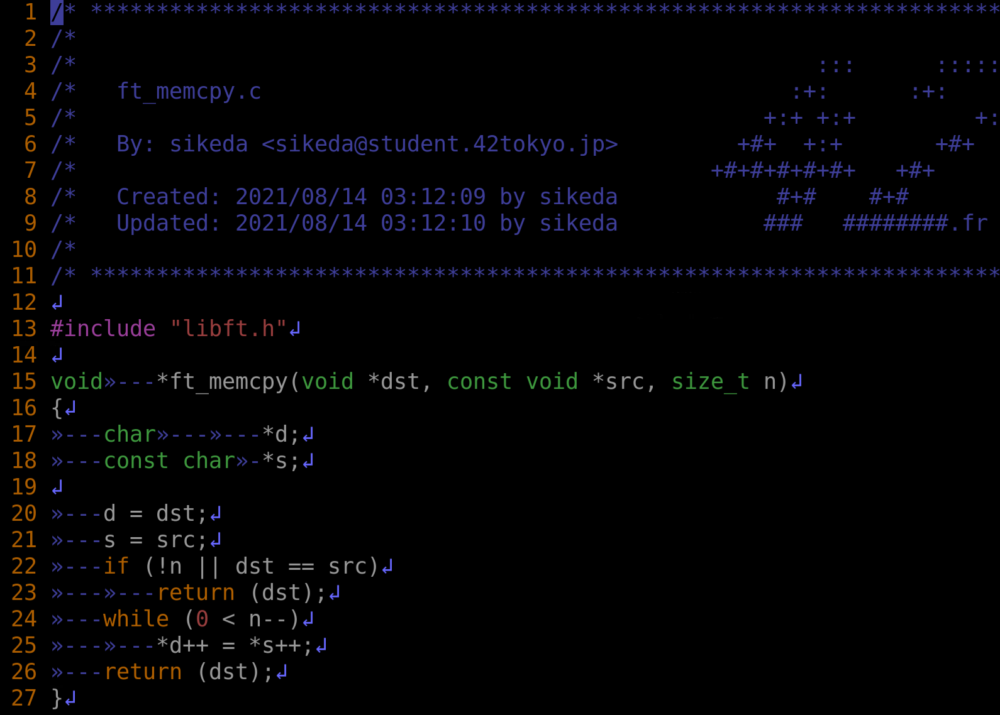
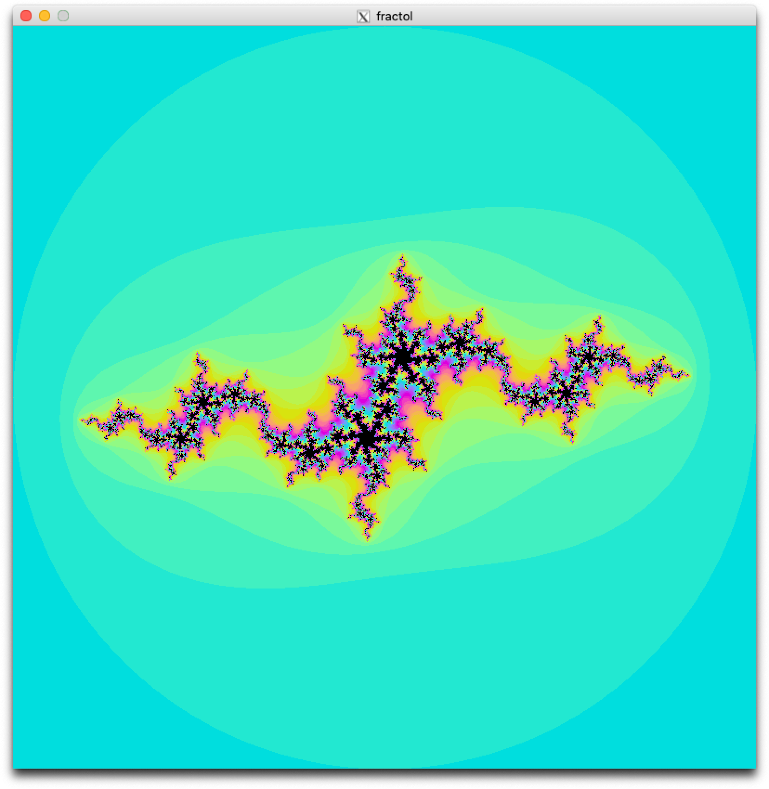
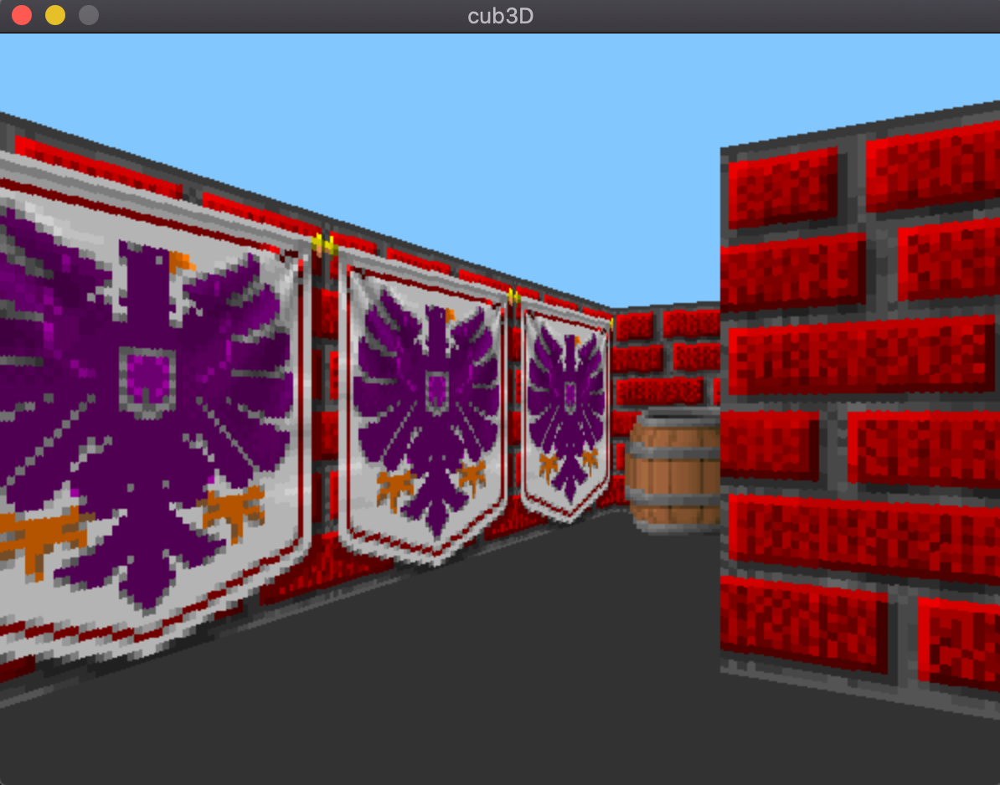
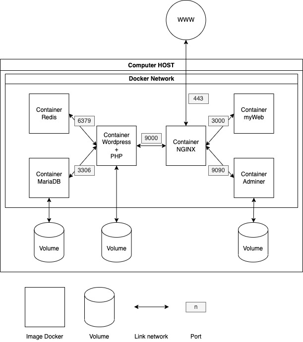
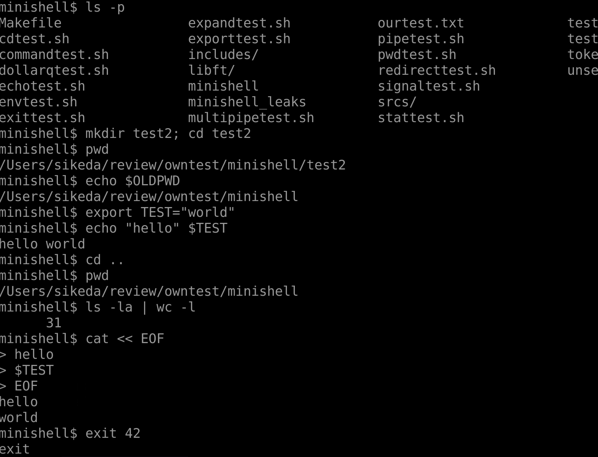

s-ikeda portfolio website
Portfolio
About
Portfolio
About

Libft
Libcの再実装.
42Tokyo課題.
C言語.
2020.10
Move to repository

fract-ol
フラクタル画像の描画と操作.
42Tokyo課題.
C言語.
2021.9
Move to repository

cub3D
一人称視点ゲームの作成.
42Tokyo課題.
C言語.
2021.1 - 2021.3
Move to repository

Inception
NGINX, wordpress, mariaDB等のDockerコンテナとネットワーク.
42Tokyo課題.
Docker compose, shell.
2021.5
Move to repository
ft_containers
C++ STLコンテナの再実装.
42Tokyo課題.
C++.
2021.12 - 2022.1
Move to repository

minishell
bash一部再実装.
42Tokyoチーム課題.
C言語.
2021.2 - 2021.7
Move to repository
my_framework
PHP製webフレームワーク.
個人制作.
PHP.
2020.1
Move to repository
BtoCマッチングサイト、システム
BtoCマッチングサイト、システム.
個人制作.
PHP, mySQL, html, css, bootstrap, javascript.
2021.4 - 2021.8
Read more